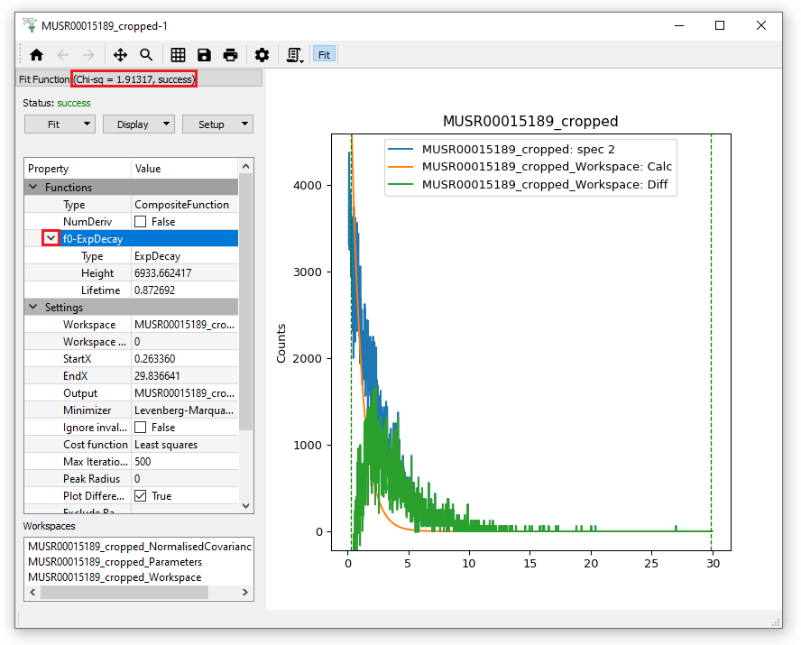
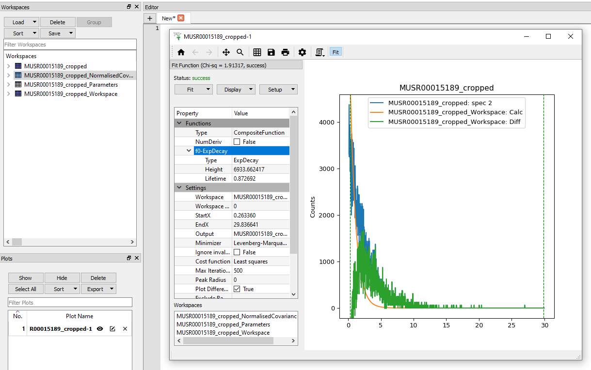
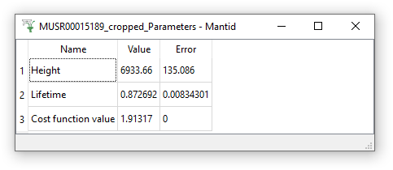
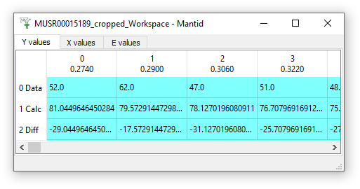

5. Notice how the ExpDecay function has appeared in the Functions list on the Fit Property Browser, and there are pre-set Settings below.
For now, just click on the drop-down menu “Fit” and run a normal Fit.
After a successful fit the results can be examined in three ways.
A plot of the fitted model will be added to the graph that now
shows the Original data, the Calculated fit and the Difference between them.
The Fit Function property browser will show the fitted parameters
instead of their initial values. If you click on the triangle beside fo-ExpDecay in the Functions list, it will reveal the Output fit parameters (Height and Lifetime values). Also the Chi-Squared value is displayed at the top of the Fitting tab.

Output workspaces will be created and available via the main Mantid Workspaces Toolbox:

There are three output workspaces:
1. A TableWorkspace with the name suffixed with “_Parameters”. It
contains the fitting parameters and their corresponding errors.

2. A MatrixWorkspace with the name suffixed with “_Workspace”. Its first
three spectra are: the original data, the calculated model, and the
difference.

3. Another TableWorkspace with the name suffixed with
“_NormalisedCovarianceMatrix”. It contains the variance-covariance
matrix normalized to 100.
{kind=link}